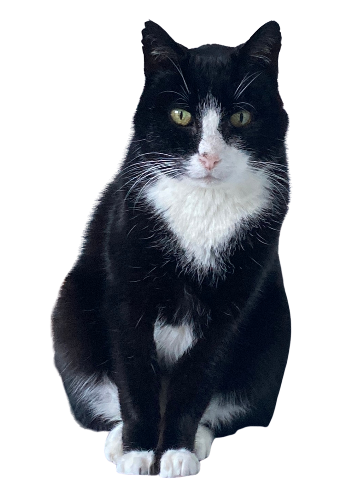
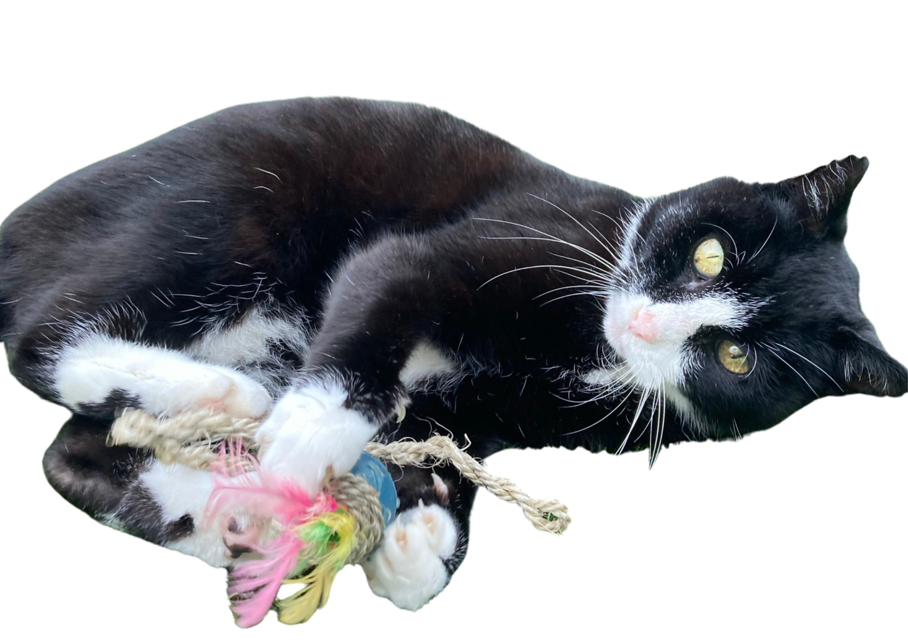

About
The Super Snoo is a very handsome boy with incredible super powers. He's cuddly, he's snuggly, and he's always hungry... but watch out! He'll swipe ya!
 Favourite Foods
- Pouch
- Mike's hands
- Bread Sticks
- Cheese (especially cheddar)
- Purina biscuits
Favourite Activities
Super Snoo has a lot of favourite activities because he's a really busy boy. Here are his top six:
- Crunching complex mathematical equations
- Snoozing because he is exhausted from all the thinking
- Checking behind doors
- Sitting on any available laps (probably Mike's) whilst working full time for WoodBlocx
- Playing with his toys
- Sneezing